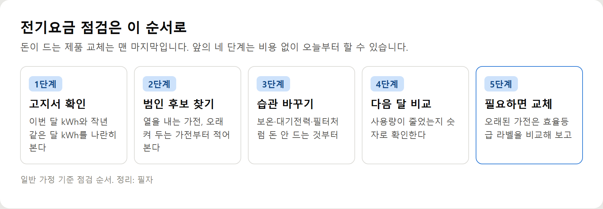

<meta charset="utf-8">
<title>전기세 많이 나오는 이유 5가지와 점검 순서 — 나의 투자 그리고 행복한 여행</title>
<meta name="description" content="전기세가 많이 나오는 이유는 누진구간 경계, 열 내는 가전, 켜 둔 시간, 새 가전, 검침 기간 다섯 가지로 좁혀집니다. 우리 집 점검 순서와 에너지캐시백 1% 기준까지 정리했습니다.">
<meta name="viewport" content="width=device-width, initial-scale=1">
<link rel="canonical" href="https://worldtraveler1.tistory.com/123">
<link rel="preconnect" href="https://fonts.googleapis.com">
<link rel="preconnect" href="https://fonts.gstatic.com" crossorigin>
<link rel="stylesheet" href="https://fonts.googleapis.com/css2?family=Hahmlet:wght@400;600;800&family=IBM+Plex+Mono:wght@400;500&family=IBM+Plex+Sans+KR:wght@300;400;500;600&display=swap">

<style>
  :root{
    --paper:#F2EEE6;--surface:#FAF8F3;--surface-2:#E7E1D5;
    --ink:#191510;--ink-2:#4A4235;--ink-3:#7D7364;
    --line:#D6CEBF;--line-soft:#E4DDD0;--accent:#B06A15;--accent-bright:#C2761A;
    --up:#E5484D;--down:#3B82F6;
    --f-display:"Hahmlet",'Nanum Myeongjo',"Apple SD Gothic Neo",serif;
    --f-body:"IBM Plex Sans KR","Apple SD Gothic Neo","Malgun Gothic",sans-serif;
    --f-mono:"IBM Plex Mono","SFMono-Regular",Consolas,monospace;
    --pad:clamp(20px,5vw,64px);
  }
  @media (prefers-color-scheme:dark){
    :root:not([data-theme="light"]){
      --paper:#0B1120;--surface:#121A2C;--surface-2:#1A2439;
      --ink:#E9EEF7;--ink-2:#A9B5C9;--ink-3:#72809A;
      --line:#26314A;--line-soft:#1D2739;--accent:#E8A33D;--accent-bright:#F0B45C;
    }
  }
  *{box-sizing:border-box;}
  body{margin:0;background:var(--paper);color:var(--ink);font-family:var(--f-body);
    font-weight:300;font-size:1rem;line-height:1.75;-webkit-font-smoothing:antialiased;}
  a{color:inherit;}
  img{max-width:100%;height:auto;}
  .wrap{max-width:760px;margin:0 auto;padding-inline:var(--pad);}
  .nav{position:sticky;top:0;z-index:20;background:color-mix(in srgb,var(--paper) 88%,transparent);
    backdrop-filter:saturate(180%) blur(12px);border-bottom:1px solid var(--line);}
  .nav-in{display:flex;align-items:center;justify-content:space-between;height:58px;}
  .brand{font-family:var(--f-display);font-weight:600;font-size:1rem;letter-spacing:-.02em;text-decoration:none;}
  .back{font-family:var(--f-mono);font-size:.72rem;color:var(--ink-3);text-decoration:none;}
  .article{padding-block:clamp(40px,7vw,72px) clamp(56px,9vw,96px);}
  .eyebrow{font-family:var(--f-mono);font-size:.68rem;letter-spacing:.16em;text-transform:uppercase;
    color:var(--accent);margin:0 0 14px;}
  h1{font-family:var(--f-display);font-weight:800;font-size:clamp(1.6rem,4.4vw,2.3rem);
    line-height:1.3;letter-spacing:-.03em;margin:0 0 16px;}
  .byline{font-family:var(--f-mono);font-size:.72rem;color:var(--ink-3);
    padding-bottom:24px;border-bottom:1px solid var(--line);margin-bottom:32px;}
  h2{font-family:var(--f-display);font-weight:600;font-size:1.25rem;letter-spacing:-.02em;margin:42px 0 14px;}
  h3{font-family:var(--f-display);font-weight:600;font-size:1.05rem;letter-spacing:-.02em;
    margin:30px 0 10px;padding-top:14px;border-top:1px solid var(--line-soft);}
  h3 .code{font-family:var(--f-mono);font-size:.7rem;font-weight:400;color:var(--ink-3);margin-left:6px;}
  p{margin:0 0 18px;color:var(--ink-2);}
  ul.checks{margin:0 0 18px;padding-left:20px;color:var(--ink-2);}
  ul.checks li{margin-bottom:8px;font-size:.94rem;}
  table{width:100%;border-collapse:collapse;font-size:.88rem;margin-bottom:8px;}
  th{font-family:var(--f-mono);font-size:.66rem;letter-spacing:.06em;text-transform:uppercase;
    color:var(--ink-3);text-align:right;padding:8px 6px;border-bottom:1px solid var(--line);}
  th:first-child{text-align:left;}
  td{padding:10px 6px;border-bottom:1px solid var(--line-soft);color:var(--ink-2);}
  td.num{font-family:var(--f-mono);text-align:right;font-variant-numeric:tabular-nums;}
  td.up{color:var(--up);} td.down{color:var(--down);}
  .scroll{overflow-x:auto;}
  figure{margin:22px 0;}
  figure img{display:block;border-radius:3px;background:var(--surface-2);}
  figcaption{margin-top:8px;font-family:var(--f-mono);font-size:.68rem;color:var(--ink-3);text-align:center;}
  .note{margin-top:34px;padding:16px 18px;border-left:3px solid var(--accent);
    background:var(--surface);border-radius:0 3px 3px 0;}
  .note p{margin:0;font-size:.85rem;color:var(--ink-3);}
  .foot{border-top:1px solid var(--line);background:var(--surface);padding-block:30px 38px;}
  .foot p{margin:0;font-size:.8rem;color:var(--ink-3);}
</style>

<nav class="nav">
  <div class="wrap nav-in">
    <a class="brand" href="../index.html">나의 투자 그리고 행복한 여행</a>
    <a class="back" href="../index.html#stocks">← 시황으로</a>
  </div>
</nav>

<main class="wrap article">
  <p class="eyebrow">Market</p>
  <h1>전기세 아끼려다 오히려 손해 보는 방법 5가지와 다음 달 비교 체크리스트</h1>
  <p class="byline">생활 · 2026-10-03 기준</p>

  <p><b>이 포스팅은 쿠팡 파트너스 활동의 일환으로, 이에 따른 일정액의 수수료를 제공받습니다.</b></p>
  <p><b>이 포스팅은 네이버 쇼핑 커넥트 활동의 일환으로, 판매 발생 시 수수료를 제공받습니다.</b></p>
  <p>한 줄 요약: 냉장고는 끄지 말고, 히터는 멀티탭에 꽂지 말고, 절전 제품은 맨 나중에 사세요.</p>
  <p>요금표는 2026년 10월 2일 한전 기준, 에너지캐시백은 2026년 7~12월 검침분 기준입니다.</p>
  <h2>오히려 손해 보는 절약법 5가지</h2>
  <p>아끼려고 한 일이 불편만 남기거나 위험해지는 경우가 있습니다.</p>
  <h2>1. 인버터 에어컨을 자주 껐다 켜기</h2>
  <p>인버터형은 목표 온도에 도달하면 약하게 돌면서 유지합니다. 짧은 외출마다 끄면 다시 켤 때 처음부터 세게 돌아야 해요. 우리 집 에어컨이 인버터형인지부터 확인하세요.</p>
  <p>대신 이렇게: 장시간 외출이 아니라면 켜 두고, 설정 온도를 지나치게 낮추지 않으며, 필터를 2주에 한 번쯤 확인합니다. 정속형이라면 반대로 필요할 때만 켜는 쪽이 맞습니다.</p>
  <h2>2. 냉장고 전원을 끄거나 온도를 확 올리기</h2>
  <p>냉장고는 아낄 대상이 아니라 관리할 대상입니다. 냉장 5℃ 이하, 냉동 -18℃ 이하가 식품 보관 기준이에요. 문을 짧게 열고 뒤쪽에 열이 빠질 틈을 두는 쪽이 안전합니다.</p>
  <h2>3. 히터를 멀티탭에 꽂기</h2>
  <p>히터·전기레인지·건조기처럼 전력이 큰 가전은 벽 콘센트에 바로 꽂으세요. 멀티탭 허용 용량을 넘기면 과열될 수 있습니다.</p>
  <p>대신 이렇게: 멀티탭은 TV·셋톱박스·PC처럼 작은 가전을 묶어 대기전력을 끄는 용도로 씁니다. 멀티탭에 멀티탭을 연결하는 문어발도 피하세요.</p>
  <h2>4. 덥고 추운 걸 참기</h2>
  <p>어르신이나 어린아이가 있는 집에서 냉난방을 무리하게 줄이면 건강 문제가 더 큰 비용이 됩니다. 온도를 참는 대신 커튼·문풍지로 새는 열을 막고, 선풍기로 공기를 돌리는 쪽이 낫습니다.</p>
  <h2>5. 절전 제품부터 사기</h2>
  <p>원인을 모른 채 사면 엉뚱한 곳에 돈을 씁니다. 습관 → 관리 → 사용량 확인 → 교체 순서가 맞아요.</p>
  <p>예를 들어 전기요금 때문에 냉장고를 바꿨는데 정작 늘어난 원인이 새로 들인 건조기였다면, 큰돈을 쓰고도 고지서는 그대로입니다. 교체를 고민한다면 에너지소비효율등급 라벨의 월간 소비전력량을 지금 제품과 비교해 보세요. 다만 라벨 숫자는 표준 시험 조건 기준이라 실제 사용과는 차이가 날 수 있습니다.</p>
  <figure><figcaption>전기요금 점검 순서 5단계 — 돈 드는 교체는 맨 마지막</figcaption></figure>
  <div style="text-align:center;margin:30px 0"><a href="https://link.coupang.com/a/hwuJOw9x7I" target="_blank" rel="nofollow sponsored noopener" style="display:inline-block;padding:15px 28px;background:#E34948;color:#fff;font-weight:700;font-size:18px;text-decoration:none;border-radius:8px"><b>▶ 쿠팡에서 보기 — 번개표 개별스위치 멀티탭 4구</b></a></div>
  <h2>다음 달 고지서 비교 체크리스트</h2>
  <ul class="checks">
    <li>□ 이번 달 사용량(kWh)을 적어 뒀다</li>
    <li>□ 작년 같은 달 사용량을 확인했다</li>
    <li>□ 최근 새로 들인 가전을 적어 봤다</li>
    <li>□ 밥솥 보온 시간을 줄였다</li>
    <li>□ 건조기·에어컨 필터를 청소했다</li>
    <li>□ 자기 전 TV·PC 멀티탭을 끈다</li>
    <li>□ 큰 가전은 벽 콘센트에 꽂혀 있다</li>
    <li>□ 에너지캐시백을 신청했다</li>
  </ul>
  <p>다음 달 고지서가 오면 체크한 항목 수와 사용량 변화를 같이 보세요. 줄었다면 그 습관을 유지하고, 그대로라면 아직 체크 못 한 항목에 원인이 있을 가능성이 큽니다.</p>
  <p>2026년 7~12월 검침분은 직전 2년 같은 달 평균보다 1%만 줄여도 한전 에너지캐시백 대상입니다. 체크리스트대로 줄였다면 신청까지 해 두세요.</p>
  <div style="text-align:center;margin:30px 0"><a href="https://naver.me/FG3x5j6O" target="_blank" rel="nofollow sponsored noopener" style="display:inline-block;padding:15px 28px;background:#E34948;color:#fff;font-weight:700;font-size:18px;text-decoration:none;border-radius:8px"><b>▶ 네이버에서 보기 — 에너자이저 개별스위치 고용량 멀티탭 3구</b></a></div>
  <div style="text-align:center;margin:30px 0"><a href="https://worldtraveler1.tistory.com/123" target="_blank" rel="nofollow sponsored noopener" style="display:inline-block;padding:15px 28px;background:#E34948;color:#fff;font-weight:700;font-size:18px;text-decoration:none;border-radius:8px"><b>▶ 원문에서 전체 내용 보기 — 전기세 많이 나오는 이유 5가지</b></a></div>
  <div style="text-align:center;margin:30px 0"><a href="https://danielmoon82.github.io/moon/posts/elec-saving-2026-10-02.html" target="_blank" rel="nofollow sponsored noopener" style="display:inline-block;padding:15px 28px;background:#E34948;color:#fff;font-weight:700;font-size:18px;text-decoration:none;border-radius:8px"><b>▶ 함께 보면 좋은 글 — 여름·겨울 전기요금 체크리스트 14</b></a></div>
  <h2>참고자료</h2>
  <ul class="checks">
    <li>한국전력공사 사이버지점 — 주택용 전력(저압) 요금표 (2026.10.2 확인)</li>
    <li>한국전력공사 — 주택용 에너지캐시백 확대 개편 발표 (2026.6.29, 아시아경제·데일리안 보도)</li>
    <li>삼성전자서비스·LG전자 — 에너지소비효율등급 라벨 보는 법 안내</li>
    <li>식품의약품안전처 — 냉장 5℃ 이하·냉동 -18℃ 이하 보관 기준</li>
  </ul>
  <div class="note"><p>요금표는 2026년 10월 2일 한국전력공사 사이버지점 기준이고, 에너지캐시백 조건은 2026년 7~12월 검침분 기준 한전 발표 내용입니다. 둘 다 바뀔 수 있습니다. 글 속 금액은 기본요금과 전력량요금만 계산한 값이라 실제 고지서와 다릅니다. '예를 들어'로 시작하는 사례는 이해를 돕기 위한 가상의 예시입니다.</p></div>
  <p style="font-size:12px;color:#999;line-height:1.6;margin-top:36px">이 포스팅은 쿠팡 파트너스 활동의 일환으로, 이에 따른 일정액의 수수료를 제공받습니다.</p>
  <p style="font-size:12px;color:#999;line-height:1.6;margin-top:36px">이 포스팅은 네이버 쇼핑 커넥트 활동의 일환으로, 판매 발생 시 수수료를 제공받습니다.</p>
</main>

<footer class="foot">
  <div class="wrap"><p>나의 투자 그리고 행복한 여행 · 투자 판단의 참고 자료일 뿐, 매수·매도를 권유하지 않습니다.</p></div>
</footer>
